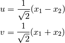
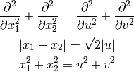
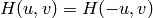
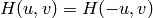
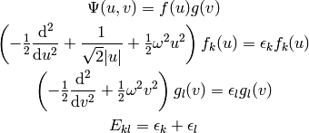
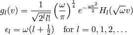
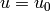
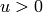
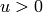
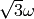

Examples¶
Two Particles in Harmonic Potential¶
It is a 1D, two-body problem with an interacting Hamiltonian

and it can be solved analytically. The Schrödinger equation is

we use the substitution:

then

and

Note also the symmetry of the Hamiltonian  which
after substitution is equivalent to .
Now we can separate the equation:
which
after substitution is equivalent to .
Now we can separate the equation:

the solution of the second equation is:

where  are the Hermite polynomials:
are the Hermite polynomials:

The solution to the first equation can be approximated around the minimum of
the potential, which occurs at point  (since the potential is symmetric
with respect to  , we only treat the branch ):
, we only treat the branch ):

So the first few states can be approximated by the harmonic oscillator solution with frequency :

The final solution is then: